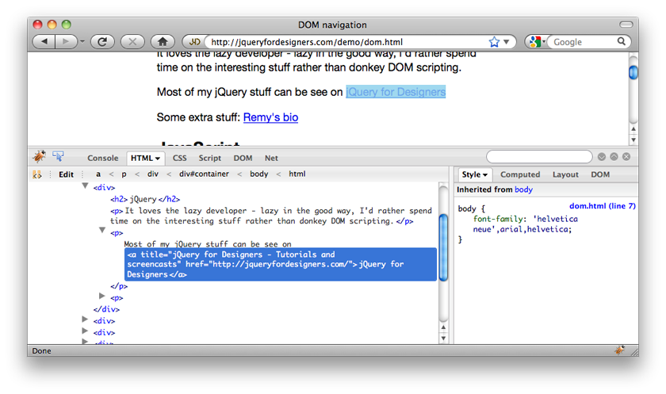
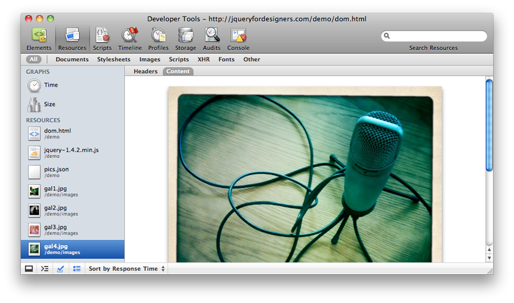
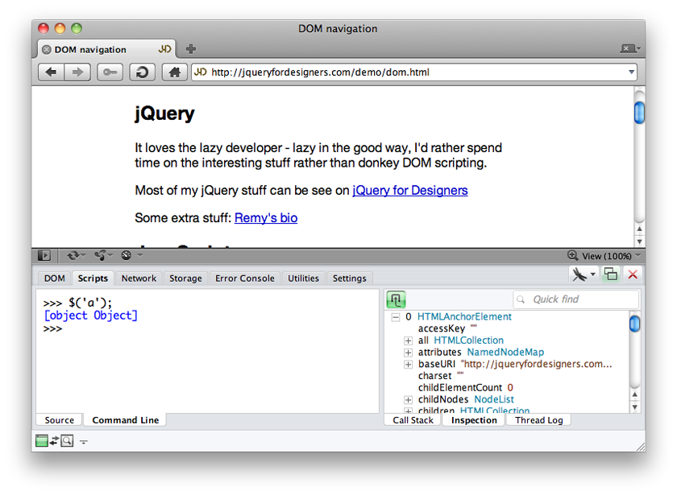

New
New

 Play Flash version
Play Flash version
Watch
Watch Debuggers screencast (Alternative flash version)
QuickTime version is approximately 100Mb, flash version is streaming.
View the demo used in the screencast
Logging to Debuggers
It’s not mentioned in the screencast anywhere, but if your code includes the code console.log('my message') it will appear in the console area of each of the debuggers.
Firefox’s Firebug
All Big Five browsers have their own best tools for debugging. Firefox is the only browser that now doesn’t ship with a debugger by default, but Firebug is still the best choice for debugging so we’ll go ahead and install that.
Before you install Firebug, I strongly recommend you set up a separate development profile by following the directions on mozillazine.org on how to create new profiles. This profile will be dedicated to web development and shouldn’t include your normal digest of Firefox extensions. This ensures nothing interferes with Firebug’s set up.

Once firebug is installed, you need to manually enable the console tab, and you may chose to enable the multiline console editor – which makes it easier to paste larger blocks of code in Firebug – this is really useful for testing chunks of code.
Using a jQuery command directly in the console, like jQuery.fn.jquery or $.fn.jquery we can check the version of jQuery installed – or ascertain if jQuery is installed at all.
From Firebug we can inspect individual elements by rolling the mouse over them and seeing where the highlight in the current page. I usually poke around the DOM tab (from the main HTML tab), this will expose information like href and hash which are useful to manipulate in jQuery.
FireQuery
Once Firebug is in place, I recommend checking out the FireQuery extension for Firebug. This gives you a load more jQuery specific information, such as which elements have events bound to them and you can even click on the individual bound events to link through to the JavaScript that will run on that particular event (in your code, rather than jQuery).
Very useful indeed.
Safari & Chrome’s Web Inspector
You need to manually enable the web inspectors in Safari and Chrome, but it’s very easy:
- Safari: open the preferences, check the “Show Develop menu in the menu bar” item
- Chrome: open the preferences, check the “Show Page and Tools menus” item

Now on the Mac, you can hit cmd+shift+i to open the inspector. From here you can inspect elements, modify styles, test code in the console, and inspect resources being requested, such as Ajax requests.
Inside of click handlers, I prefer to use event.preventDefault() at the top of my function, instead of return false at the bottom, to avoid any confusion if there’s a JavaScript error and the browser is following the link.
Opera’s Dragonfly
Opera, like Chrome, comes with it’s own built in debugger. It’s initial state is a little tricky to start with, but once you familiarise yourself with it, you’ll be able to test blocks of JavaScript and jQuery. Again, as per Chrome & Safari, on the Mac, the key command is the same: cmd+shift+i (feel free to leave a comment if you know what it is on Window).

IE’s Developer Tools
Finally we have IE, which has a varying range of developer tools. The original developer tools (for IE6 & IE7) is pretty basic, but IE8 and in particular IE9 (for preview 3) are looking very good (though my apologies from the screencast – I’m not completely familiar with all the IE8 developer tool features so it goes a little awry!).
Make the Debuggers Your New Home
You need to be as familiar with these development tools as you are with editing CSS on the fly in the browser. It’s important to know how to check whether an Ajax request is failing or not, and where to go when you’re testing a block of code, rather than toing and froing back and forth with uploading code to servers, just to test a new bit of code – it’s a perfect candidate for being tested in the console.
You should follow me on Twitter here I tweet about jQuery amongst the usual tweet-splurges!